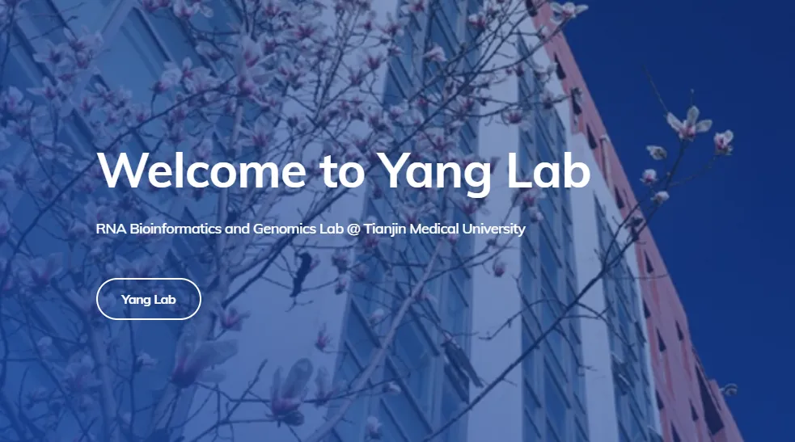

博士生招生|天津医科大学基础医学院
原文：https://mp.weixin.qq.com/s?__biz=MzAwMzIzOTk5OQ==&mid=2247523944&idx=1&sn=bfc7efe115c845c3d8c1feb5e4f7a4f7&chksm=9b3ce738ac4b6e2e47cd6a8a7117d69798438191eb1115b86edf33086811426968792b3fec82#rd 合集：求职/求学/招聘
我们长期发布招聘/求职板块(甚至我给自己都发了求职：Biomamba求职| 国奖+4篇一作SCI)，欢迎各位老师/老板欢迎联系~我们也在招贤纳士：Biomamba生信基地招聘启事。其它需要求职的小伙伴也欢迎把简历发给我们[Biomamba_yunying]，大家一起找工作/学习。
**JOIN US **

天津医科大学基础医学院生物信息学系杨扬课题组现招收2025级“申请-考核”制博士研究生，诚邀已取得硕士学位或即将取得硕士学位的研究生加入，申请者需具有生物信息学、生物学、基础医学、统计学或计算机科学等研究背景，同时需符合天津医科大学博士研究生申请条件。
课题组长期致力于生物信息学方法开发及应用，深入解析RNA转录及加工等过程，以揭示复杂疾病中遗传信息的多层次调控与传递机制，并结合人工智能技术，致力于识别疾病标志物和潜在靶点，为精准医学研究提供支持。课题组近三年在Nature Communications，Nucleic Acids Research，Genome Medicine等杂志发表文章数篇。
我们会提供优秀的学术资源和良好的研究环境，欢迎有意者将个人简历（含教育背景、科研经历、科研成果等）发送至 yy@tmu.edu.cn，邮件主题请注明“博士申请+姓名”
 往期回顾
往期回顾
Biomamba生信基地招新中：Biomamba生信基地招聘启事
往期合集可点击跳转：